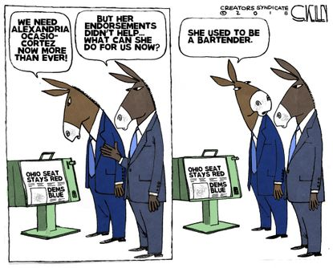
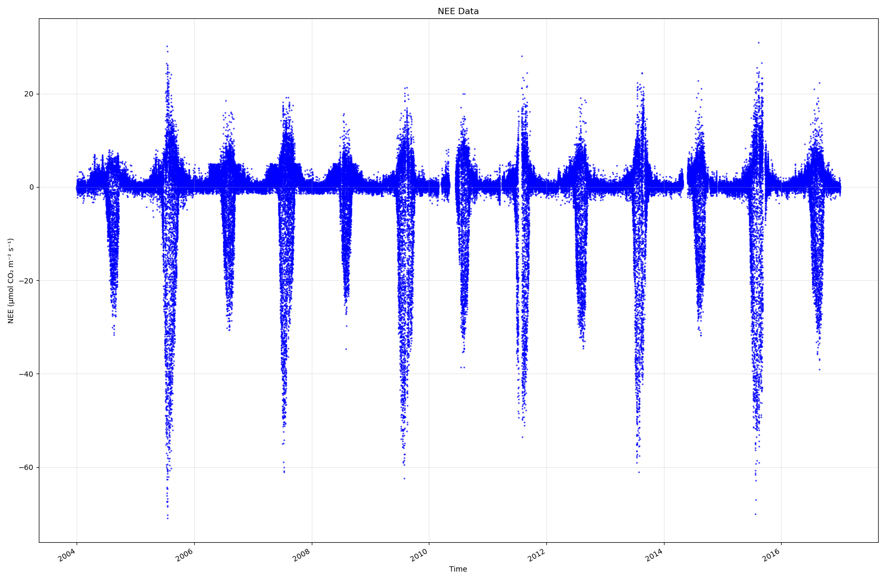

TL;DR: The election boosts MAGA, threatening checks and balances. Staying vigilant is essential. But the manuscript is progressing.
I’d like to share some personal thoughts. I know we’re all tired of hearing about it, but I feel the need to address the recent election. I’m disappointed, and I think a lot of Americans feel the same. Every election leaves about half the country unhappy, but this time feels different. The outcome has given a strong hold on power to MAGA forces, affecting not just the presidency but Congress and even the courts. Our system is built on checks and balances to prevent any one person or group from having too much control, yet I fear we may be losing that balance.
For those who want to create a better future, especially through technology, this is concerning. While we should respect election results, we don’t need to be passive if we see threats to democracy. I’m not suggesting we reject valid outcomes, but we should stay alert, exercise free speech, and oppose any moves to lock in one-party rule under false pretenses.
Let’s not assume that past rules will protect us—laws can be changed1. We need to be vigilant to ensure a fair election in 2028. I’ll be paying attention, and I hope you will too. Let’s work together to keep our democracy strong. Even if we disagree on results, we must agree on the rules and demand that everyone follows them. That’s what makes America great.
Together, we must ensure that we have a meaningful election in 2028. So, I will be paying attention, and I hope you will also pay careful attention, and share what you find with other Americans.
Bottom line: We won’t all agree with the outcome. But we need to agree on the rules and insist that others play by them. That’s what makes America great.
In the meantime, here is a cartoon that made me smile (a little):

To focus on things other than politics, I’ve continued to immerse myself in writing, and the manuscript is shaping up nicely. The challenge now is to model carbon absorption patterns that vary daily, seasonally, and annually so that the amount of carbon absorbed by a biological system can be calculated and compared within and across locations. Here’s a sample plot so that you can see both the patterns and the computational challenge (which I failed to address earlier2):

This chart describes a data set from an agricultural field that, like much of the midwest, plants corn and soybean in alternating years—the data points are separated by 30 minutes, so there are daytime (photosynthesis) and nighttime (respiration) points. Clearly, absorption by corn is much larger than for soybeans, so we can tell which crop was planted without looking at the notes. Perhaps unsurprisingly, the more photosynthesis is engaged (downward spikes), the more respiration happens (upward spikes). This peak occurs during the summer, a period of active growth. However, there are significant gaps (e.g., 2010) in the primary data that need to be accounted for if we want an accurate picture of both the absorption patterns and the magnitude of the absorption.
Now, to make it quantitative :-).
Indeed, after winning her House race by switching districts to avoid her competition, MAGA-head Lauren Boebert said that one of her objectives was to guarantee a third Trump term. The Constitution prohibits that, but we’re perilously close to two-thirds of the states under MAGA influence.